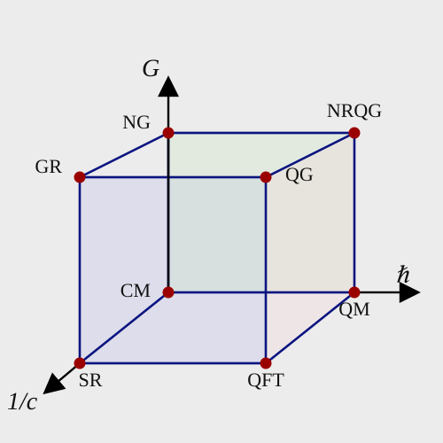
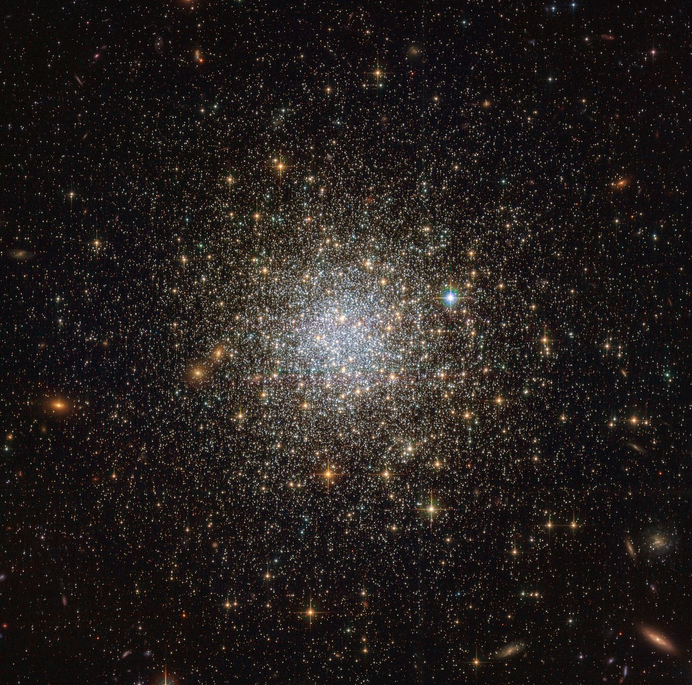

My research intertwines philosophy of physics, general philosophy of science, and metaphysics of science. I am mainly focused on four research areas.

My main academic interest lies in how scientific theories that describe reality at different levels are related, with particular emphasis on the conditions under which one theory can be reduced to another, especially in physics. My work has addressed reduction across a range of contexts, most prominently thermodynamics, classical mechanics, astrophysics, and biochemistry. A central focus of this work has been functional reduction and the development of this approach within the philosophy of science [SEP]. More broadly, I am interested in how the ontologies of theories valid at different regimes or scales are connected, and in effective (scale-relative) realism.

I'm interested in the foundations of thermodynamics and statistical mechanics, both at the classical and quantum levels. I'm especially interested in the relationship between these theories and in their applicability to unconventional domains, such as self-gravitating systems like globular clusters. Although they are successful in describing such systems, standard applications of concepts such as equilibrium and heat capacity are problematic, prompting a reconsideration of the foundations of statistical physics.I work on the structure and ontology of spacetime theories, examining both classical settings (e.g. Newton-Cartan gravity) and relativistic contexts. I focus especially on tense realism and on the relationship between space, time, and spacetime in Newtonian and relativistic physics, with particular attention to what physics tells us about simultaneity and the unification of space and time into spacetime.
I work on the ontology of quantum mechanics, especially the physical meaning of the quantum wavefunction. I explored this topic in the context of spontaneous collapse theories and Bohmian mechanics, worked on the application of Ontic Structural Realism to quantum mechanics, and developed a functionalist account to recover three-dimensional objects from the quantum wavefunction.